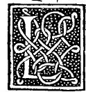

CHAPTER XXXVII¶
How the Octocedron Is Placed in the Cube.

The third proposition of the fifteenth book (Campanus XV.3) shows how to inscribe the octocedron (8 triangular bases) inside the cube (6 square bases).
Inscribing the Octahedron in the Cube (Campanus XV.3)
In a given cube (exacedron), to inscribe the regular body of eight equilateral triangular bases (octocedron) so that the six solid angles of the octocedron stand at the centers of the six square faces of the cube.
In each of the six square faces of the given cube, draw the two diagonals intersecting one another at the center of that square face ([IV.6]), giving six face centers \(k, l, m, n\) on the four vertical faces and \(o, p\) on the lower and upper faces (see the marginal diagram
0038.g3.pngon Folio 0038).Join the four lateral face centers in order by the four straight lines \(kl, lm, mn, nk\) to form a central horizontal square, and join each of the two polar face centers \(o\) and \(p\) by four straight lines (\(ok, ol, om, on\) and \(pk, pl, pm, pn\)) to the four lateral centers.
Because the distance from the center of each square face of the cube to the midpoint of any of its four edges equals half the edge of the cube (\(\frac{1}{2}s_{\text{cube}}\)), and adjacent faces of the cube meet at right angles, each of the twelve connecting lines \(kl, lm, \dots, pn\) is the hypotenuse of a right-angled isosceles triangle whose two legs equal \(\frac{1}{2}s_{\text{cube}}\).
By the penultimate of the first, the square on each of the twelve edges of the inscribed figure equals:
\[\left(\frac{1}{2}s_{\text{cube}}\right)^{2} + \left(\frac{1}{2}s_{\text{cube}}\right)^{2} = \frac{1}{2}s_{\text{cube}}^{2}\]Thus all twelve edges are mutually equal, all eight triangular faces are equilateral, and the six vertices \(k, l, m, n, o, p\) touch the six centers of the faces of the cube.
Therefore the regular octocedron is inscribed in the cube, and the square on the edge of the cube is double (\(2 : 1\)) the square on the edge of the octocedron inscribed in it (so the edge of the inscribed octocedron equals half the face diagonal of the cube).